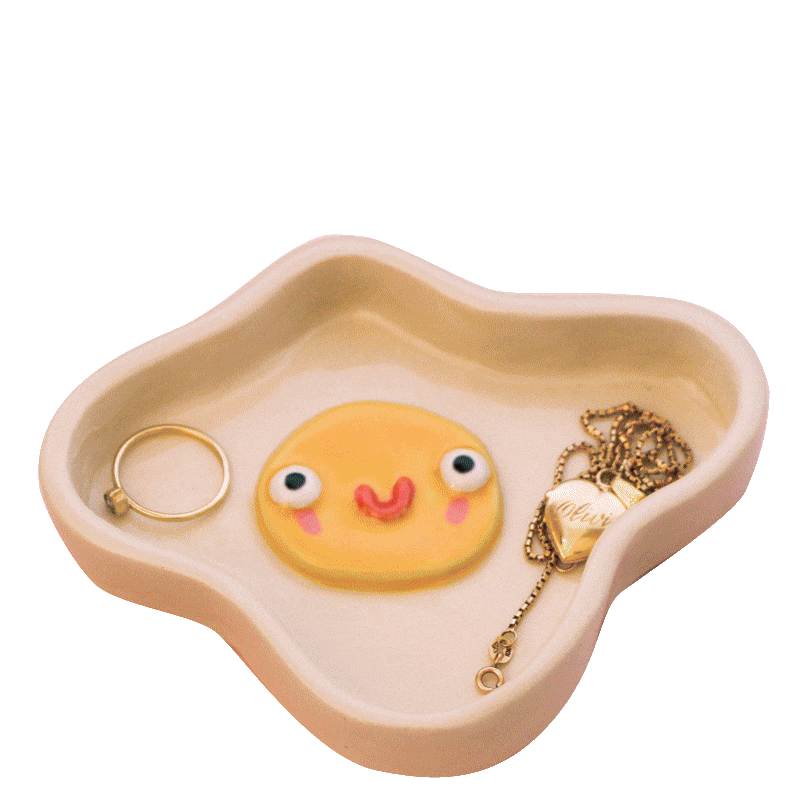
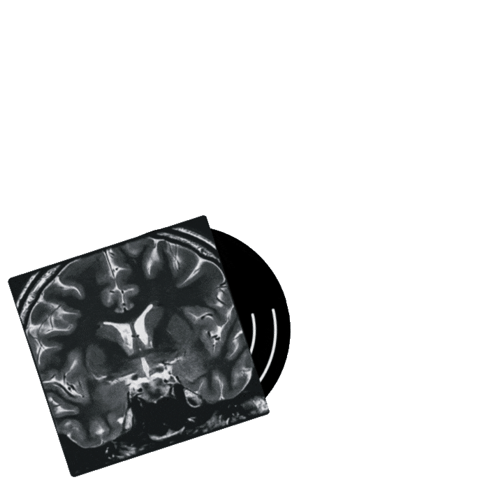
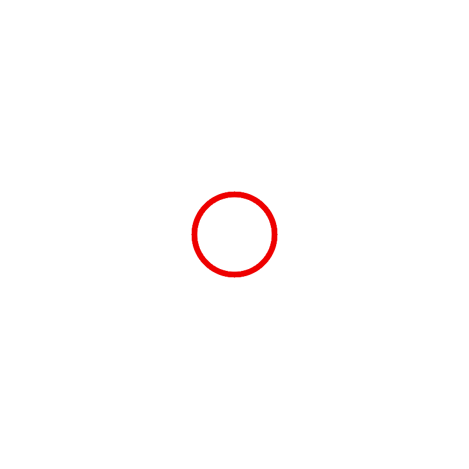
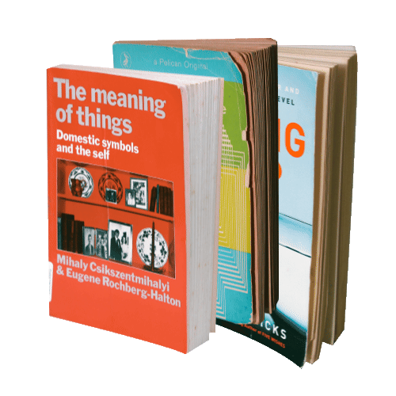
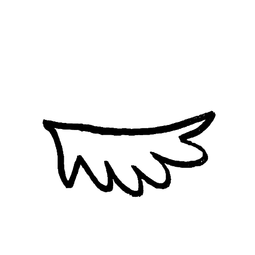
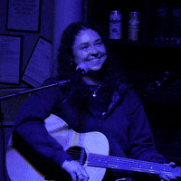

OliviaWorld
join the revolution
Case Studies
Data-driven technical content improvements based on UX research of SAP Analytics Cloud documentation.

Design system and technical documentation for visual and multimedia enhancements to SAP Analytics Cloud documentation.

Personal ceramics business brand identity and visual presentation overhaul.

Personal Projects
I conceptualize and create silly ceramics that I sell on Etsy.
Website and visual identity creation (plus songwriting and production) for personal music project.
Essay about my personal experience navigating beauty standards and disordered eating.
Web design and development project I made to capture my highlights from nonfiction reading.
My ongoing pet project I use to practice visual and web design and learn Javascript. Have you played with the colour themes yet?
About the designer
What do you get when you combine an obsession with visual design and an insatiable appetite for learning? You get me and the random projects I make!
My name is Olivia and I like to make things make sense. I am a passionate about instructional design, and love to listen, observe, and understand the why (and the why behind that), and then use visuals and writing to explain it to others.
I'm currently finishing my degree in Interactive Arts + Technology and Psychology at SFU, and planning to graduate by 2026 (!!!). I'm also TAing for the formative SIAT visual/interaction design course right now.
I have experience as a visual designer, UX researcher, technical writer, and multimedia instructional content developer, where I combined my passion for clear information design with strong comprehension, writing and narrative abilities.
I believe design is a powerful tool to express, connect, educate and inform, and strive to use my power responsibly.